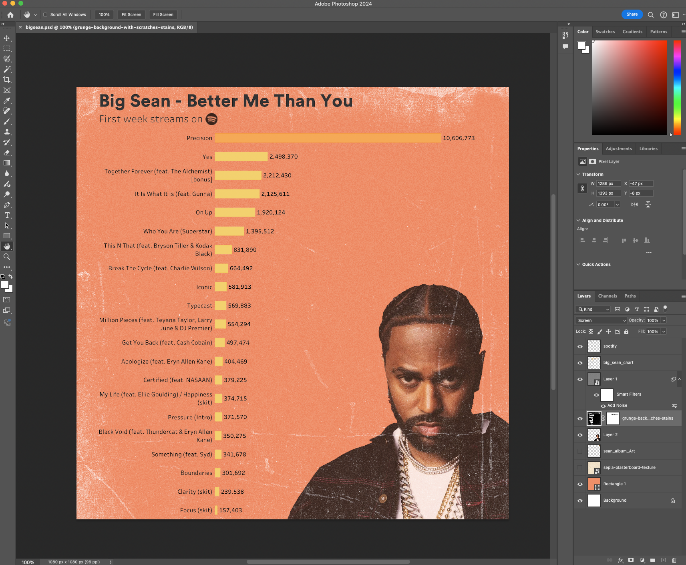

Rapmetrics.
I love rap music and wanted a way to combine it with data storytelling. I’ve always been interested in how well a rap album or song does and find myself frequently looking up streaming numbers. However, Spotify doesn’t visualize its data for consumers to easily digest. This inspired me to create a social media brand that would deliver interesting insights about rap music.
Role
Lead Developer
Timeline
June 2024 - Present
Tools
SQL, Python, Tableau, Photoshop
Impact
Reached 300+ accounts across social media
Process
For the image above, the process starts in Python. Collecting data from Spotify manually can be tedious so I decided to build a scraper that would do this automatically for me.
from selenium import webdriver
from selenium.webdriver.common.by import By
import time
import csv
link = input('Paste your Spotify album url:\n')
driver = webdriver.Chrome()
driver.get(link)
time.sleep(5)
# Finds title tracks and streams
track_elements = driver.find_elements(By.CSS_SELECTOR, 'a[data-testid="internal-track-link"]')
track_links = [track.get_attribute('href') for track in track_elements]
track_streams = {}
name = []
plays = []
for link in track_links:
driver.get(link)
time.sleep(5)
name.append(driver.find_element(By.CSS_SELECTOR, 'h1[data-encore-id="text"]').text)
plays.append(driver.find_element(By.CSS_SELECTOR, 'span[data-testid="playcount"]').text)
track_streams['Name'] = name
track_streams['Plays'] = plays
print(track_streams)
driver.quit()
with open('album_data.csv','w',newline='') as f:
writer = csv.writer(f)
writer.writerow(track_streams.keys())
for i in range(len(name)):
writer.writerow([val[i] for val in track_streams.values()])
The album scraper I created uses Selenium to go through an artist’s album Spotify page to extract streaming data that I will use for my visualization. Since the data isn’t all on one page, the scraper has to click through each track to obtain streaming data. Once finished, the scraper will output the data as a CSV file which I can then load into Tableau or Plotly to create a bar graph.
Using the bar graph, I will put the image into Photoshop to add aesthetic effects to drive more engagement.
Conclusion
This project has been fulfilling to please the coder side of my brain and the rap lover in me. It sparked my love for data engineering and allowed me to see how data engineering can be applied anywhere. I will continue to find more interesting data and build ETL pipelines to grow Rapmetrics.